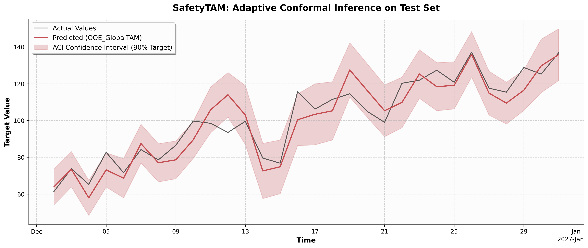
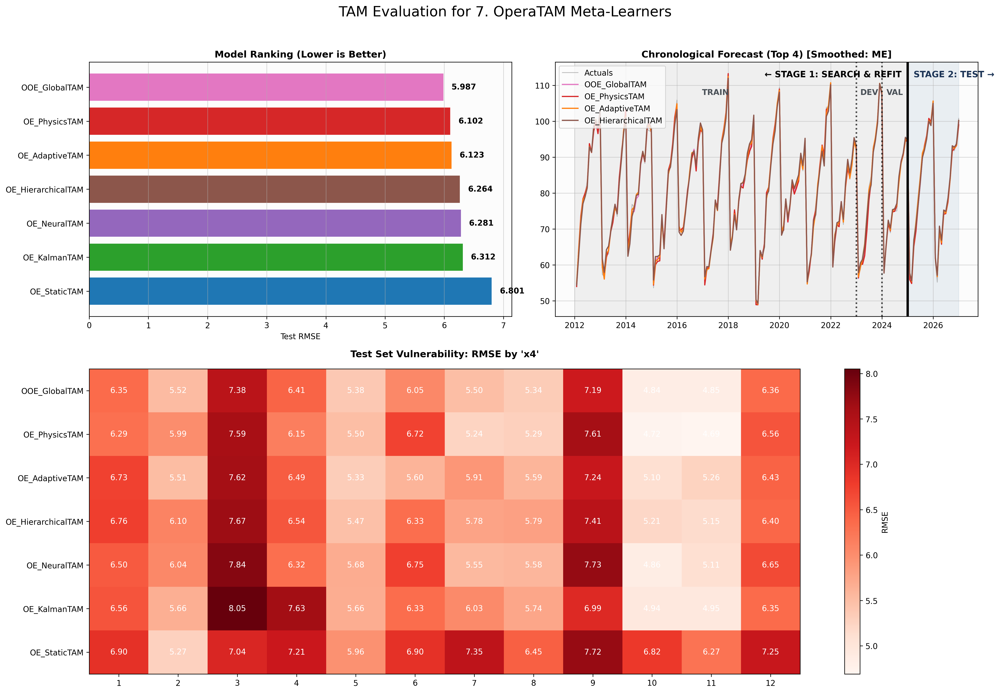
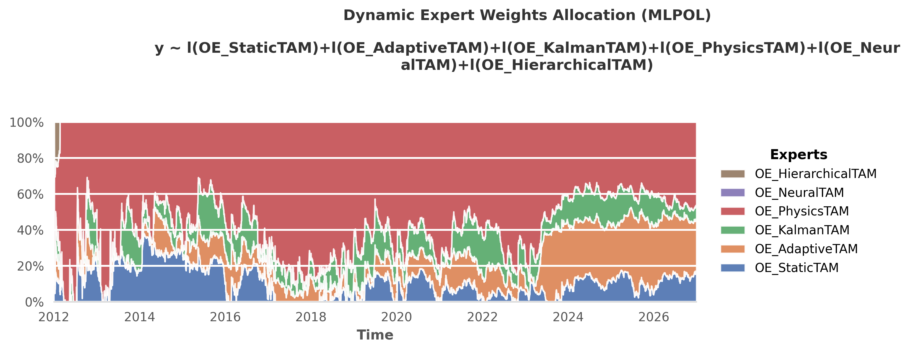
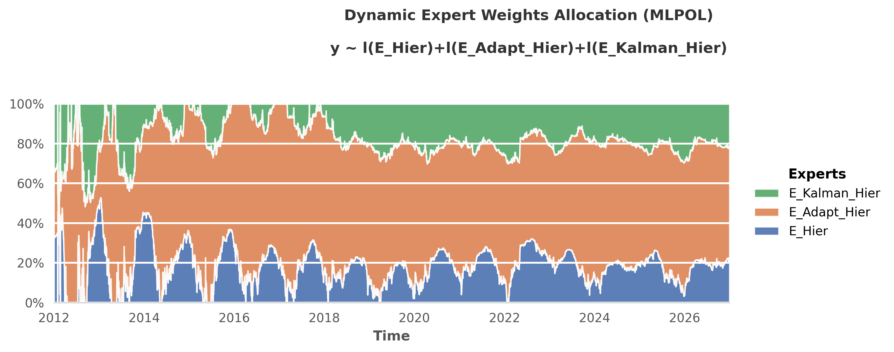
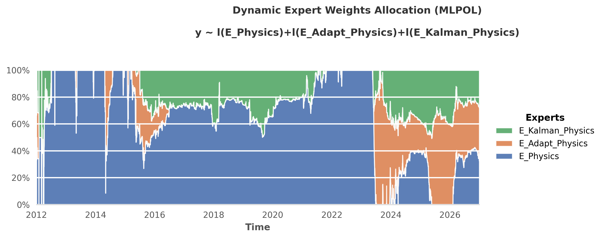
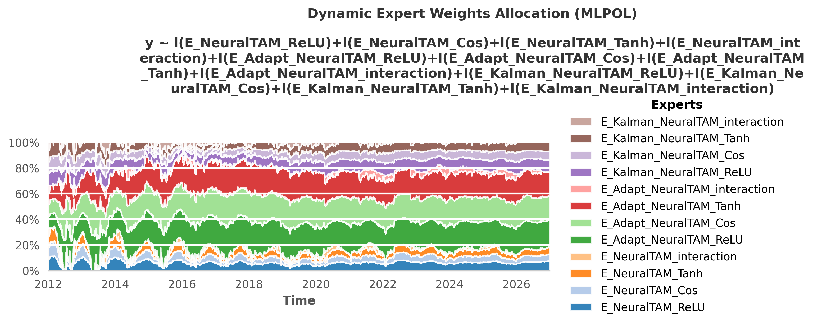
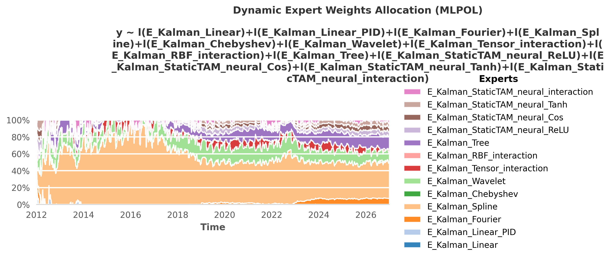
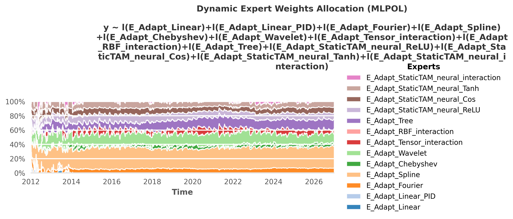
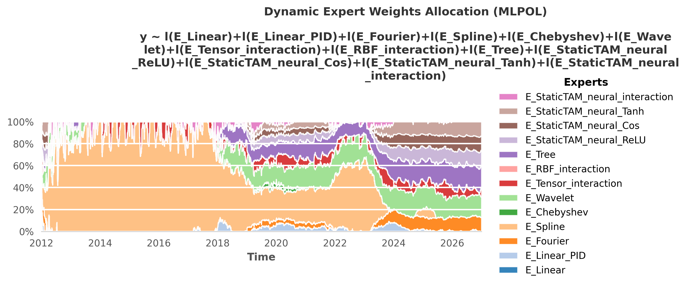

📚 Theory Introduction of TAM and Cheatsheet¶
⬅️ README | 🧪 EXAMPLES | 👥 AUTHORS | 📝 ACKNOWLEDGEMENTS
This document serves as the central mathematical reference and directory for the Time series Additive Model (TAM) framework.
The Core Primal Equation¶
At the heart of TAM’s exact resolution is a global convex optimization problem. Rather than relying on black-box gradient descent or scaling-limited dual kernel matrices, the framework projects all functional bases explicitly into a finite Reproducing Kernel Hilbert Space (RKHS).
The entire framework scales around this single, exact analytical resolution:
\(\Phi\): The finite-dimensional Design Matrix (Feature Map).
\(\Lambda\): The observation weighting/masking diagonal matrix.
\(P\): The structural penalty matrix (controlling the bias-variance tradeoff).
\(Y\): The target vector.
\(T\) (Time Steps): The temporal sequence length per group. In the codebase, this corresponds to
num_samples.
(Note: This exact resolution is computed independently for each group \(g \in G\) to preserve local time-series dynamics).
The Core and Meta Models¶
The Core Model¶
You build the baseline model by mapping features into different mathematical bases (e.g., splines s(), Fourier f(), linear l(), physics phys()) using an R-style formula. See the spectrum effect cheatsheet below.
import tam as ta
# Define baseline components (Continuous and Categorical with specific topologies)
base_cats = "+ c(x3, n_cat=7, topo='nominal') + c(x4, n_cat=12, topo='fourier') + c(x7, n_cat=2, topo='ordinal') + c(x10, n_cat=31, topo='nominal')"
base_lin = "l(x1) + l(x2) + l(x5) + l(x6) + l(x8)"
# Example 1: Physics-Informed Model (Explicit PDE injection)
f_physics = f"y ~ phys(x5, basis='spline', k=20, D1=0.5, D2=1.0) + s(x1, k=10) + s(x6, k=10) + s(Lag_y, k=15) {base_cats}"
model_phys = ta.StaticTAM(formula=f_physics, date_col="date").fit(train_df)
# Example 2: Spatial Tensor Interaction & Wavelets
f_tensor = f"y ~ te(s(x1, k=15), f(x8, m=10), ap=-30) + te(s(x2, k=10), s(x6, k=10)) + w(Lag_y, n_scales=4, n_locations=10) {base_cats}"
model_tensor = ta.StaticTAM(formula=f_tensor, date_col="date").fit(train_df)
# Predictions are generated instantly
predictions = model_phys.predict(test_df)
The Meta-Models Cheatsheet¶
Real-world data is chaotic. Rather than polluting the exactness of the core engine, TAM uses specialized “Meta-Learners” that wrap around the base model to handle specific industrial constraints.
💡 Universal Operational API: All TAM Meta-Learners (
AdaptiveTAM,KalmanTAM,OperaTAM) support a unifiedscikit-learnstyle workflow for production pipelines:
Historical Simulation: Call
model.fit(train_df)to run the dynamic online simulation and learn the optimal drift/aggregation weights.Frozen Inference: Call
model.predict(test_df)to apply the last known state as a stable, static rule on new out-of-sample data, strictly preventing target leakage.(Note: You can still call
predict_online(df)if you wish to run a continuous dynamic simulation over an entire backtest dataset).
Sudden Concept Drift (Sliding Window) \(\rightarrow\)
AdaptiveTAMUse case: A sudden crisis changes how your features behave. If the target of your base model is
y, you can targetResidualyfor pure error correction, oryfor dynamic ensemble recalibration. You can also useeffect_{feature}if that feature is in the base model formula.Option 1: Residual Tracking
Code:
ta.AdaptiveTAM(base_model=m, adaptive_formula="Residualy ~ l(Lag_Residual)", update_interval_periods=1, training_window_periods=28, steps_per_period=1, horizon_steps=1)
Mathematics: \(\hat{y}_t - \hat{y}_{\text{base}, t} = \beta_0(t) + \beta_1(t) \cdot \text{Lag\_Residual}_t\)
Option 2: Dynamic Recalibration (Targeting
y)Code:
ta.AdaptiveTAM(base_model=m, adaptive_formula="y ~ l(Lag_Residual)", update_interval_periods=1, training_window_periods=28, steps_per_period=1, horizon_steps=1, add_base_effects=True)
Mathematics: \(\hat{y}_t = \beta_0(t) + \beta_1(t) \cdot \text{Lag\_Residual}_t + \sum_{k} \beta_k(t) \cdot \text{Base\_Effect}_{k, t}\)
Continuous Parameter Drift (State-Space) \(\rightarrow\)
KalmanTAM(BETA)Use case: You need to continuously track evolving coefficients step-by-step using an Extended Kalman Filter. The formula target MUST match the target of your base model if you use
add_base_effects=Trueto automatically track the drift of the original physics.Code:
ta.KalmanTAM(base_model=m, kalman_formula="y ~ l(Lag_Residual)", date_col="date", horizon_steps=1, process_noise_var=0.5, observation_noise_var=1.0, use_decomposition=True)
Mathematics: \(\hat{y}_t = \beta_0(t) + \beta_1(t) \cdot \text{Lag\_Residual}_t + \sum_{k} \beta_k(t) \cdot \text{Base\_Effect}_{k, t}\)
Standalone Mode (Without StaticTAM)
Use case: You want to use the Kalman or Adaptive engines to track the residuals of an external model. You must compute the residual manually and add the tracker’s output back to your base forecast.
AdaptiveTAM:
ta.AdaptiveTAM(base_model=None, adaptive_formula="Residual ~ l(Lag_Residual)", group_col="group", date_col="date", ...)KalmanTAM:
ta.KalmanTAM(base_model=None, kalman_formula="Residual ~ l(Lag_Residual)", group_col="group", date_col="date", ...)
🚧 Hierarchical Coherence \(\rightarrow\)
HierarchicalTAM(BETA)Use case: Ensuring aggregate forecasts exactly equal the sum of sub-forecasts via joint optimization.
Code:
ta.HierarchicalTAM(structure={"y": ['yA','yB']}, formulas=node_formulas, node_col="Node", date_col="date")
Model Ensembling (Aggregation) \(\rightarrow\)
OperaTAMUse case: You have multiple competing models and want to dynamically aggregate them based on real-time regret.
Code (Formula):
ta.OperaTAM(formula="y ~ l(E_PhysicsTAM) + l(E_HierarchicalTAM)", algorithm='MLpol', date_col='date', loss_type='square', horizon_steps=1)Code (Columns):
ta.OperaTAM(target_col="y", expert_cols=["E_PhysicsTAM", "E_HierarchicalTAM"], algorithm='MLpol', date_col='date', loss_type='square', horizon_steps=1)
🚧 Extreme Non-Linearities \(\rightarrow\)
NeuralTAM(EXP)Use case: You want to embed a Deep Neural Network to capture complex residuals that standard physics missed. Calling
.fit()automatically trains the parametric base model first, and then iteratively trains the neural effects.Code:
ta.NeuralTAM(formula="y ~ n(x1, n_neurons=100, act='relu', n_hidden_layers=3) + s(x2)", date_col="date", epochs=1500, lr=0.001, batch_size=128)
🚧 Uncertainty & Risk \(\rightarrow\)
SafetyTAM(EXP)Use case: You need statistically guaranteed confidence intervals around your point predictions using Adaptive Conformal Inference (ACI).
Code:
safety = ta.SafetyTAM(alpha=0.1); safety.calibrate(y_true, y_pred)Output:

🚧 Automated Discovery (AutoML) \(\rightarrow\)
AutoTAM(EXP)Use case: You want an Evolutionary Engine to automatically discover the best formula topologies and hyperparameters for you.
Code:
AutoTAM(formula="y ~ AutoPipe(x1, x2, Lag_y)", n_experts=10, pop_size=50, use_opera=True)
The “Spectrum” of Effects Cheatsheet¶
Different physical phenomena require different mathematical topologies. TAM flattens these diverse fields into a unified “Spectrum”. Below is a quick reference for the PyTorch API syntax, the hyperparameters, the mapping function (\(\Phi\)), and the applied structural penalty (\(P\)) for each base effect.
💡 Mathematical Note: The individual mapping functions (\(\Phi\)) and penalty matrices (\(P_l\)) defined below are the exact building blocks of the framework. When you sum effects in your formula, TAM concatenates these individual \(\Phi\) matrices and block-diagonally stacks the \(P_l\) matrices to form the global penalty \(P\). Note that each individual penalty \(P_l\) intrinsically encapsulates its specific regularization multiplier \(\lambda\). These are plugged directly into the Core Primal Equation at the top of this page to solve for the global optimal weights.
💡 Universal Extrapolation (
extrapolate): All effects natively support Out-Of-Distribution bounds via theextrapolateparameter. You can securely bound outputs outside the[-1, 1]^Fhypercube using'continue'(raw evaluation),'constant'(plateau),'linear'(1st-order Taylor extension), or'saturation'(asymptotic curve).
Linear (l)¶
Syntax:
l(x, scaled=3.14, ap=-30)Hyperparameters:
scaled: Optional scaling factor applied to the input (defaults to \(\pi\) as a weakl legacy).ap: The penalty power defining the regularization strength.Mapping function: \(\phi_{lin}(x) = s \cdot x\)
Penalty Matrix: \(P_{lin} = \lambda I\) with \(\lambda = 10^{ap}\)
Fourier (f)¶
Syntax:
f(x, m=10, s=1, cyclic=True)Hyperparameters:
m: Number of harmonic frequencies.s: Smoothness parameter that dictates the algebraic decay rate.cyclic: Strict periodic boundary (True) or relaxed boundary (False).Mapping function: \(\phi_{fourier}(x) = \left[ \cos(k \pi x), \sin(k \pi x) \right]_{k=1}^m \text{ if cyclic } \left[ \cos\left(\frac{k \pi x}{2}\right), \sin\left(\frac{k \pi x}{2}\right) \right]_{k=1}^m\)
Penalty Matrix: \(P_{fourier} = \lambda \cdot \text{diag}\left( [1 + k^{2s}]_{k=1}^m \oplus [1 + k^{2s}]_{k=1}^m \right)\)
Spline (s)¶
Syntax:
s(x, k=10, deg=3, p=2)Hyperparameters:
k: Number of fixed knots.deg: Degree of the B-spline polynomial.p: Order of the discrete difference operator used for penalization.Mapping function: \(\phi_{spline}(x) = [B_{1,m}(x), \dots, B_{K,m}(x)]^T\)
Penalty Matrix: \(P_{spline} = \lambda (\Delta_d^T \Delta_d)\)
Chebyshev (p)¶
Syntax:
p(x, deg=5, s=0)Hyperparameters:
deg: Maximum evaluated polynomial degree.s: Smoothness parameter acting as a low-pass filter.Mapping function: \(\phi_{chebyshev}(x) = \left[ T_n(x) \right]_{n=1}^D\)
Penalty Matrix: \(P_{chebyshev} = \lambda \cdot \text{diag}\left( n^{2s} \right)_{n=1}^D\)
Categorical (c)¶
Syntax:
c(x, n_cat=5, topo='ordinal', p_order=1)Hyperparameters:
topo: Topological mapping (nominal,ordinal, orfourier).p_order: The penalty order applied.Mapping function: Nominal/Ordinal: \(\phi_{cat}(x) = \left[ I(x=c_1), \dots, I(x=c_K) \right]^\top\) | Fourier: \(\phi_{cat}(x) = \left[ \cos\left(\frac{k \pi x}{2}\right), \sin\left(\frac{k \pi x}{2}\right) \right]_{k=1}^m\)
Penalty Matrix: Nominal: \(P_{cat} = \lambda I\) | Ordinal: \(P_{cat} = \lambda D^\top D\) | Fourier: \(P_{cat} = \lambda \cdot \text{diag}\left( 1 + k^{2s} \right)\)
Interaction (te)¶
Syntax:
te(s(x, k=10), f(t, m=5), ap=-30)Mapping function: \(\phi_{cross}(x_1, \dots, x_{K_{te}}) = \phi_1(x_1) \otimes \dots \otimes \phi_{K_{te}}(x_{K_{te}})\)
2D Mapping function: \(\phi_{cross}(x_1, x_2) = \left[ h_{1,i}(x_1) h_{2,j}(x_2) \right]_{i=1, \dots, D_1}^{j=1, \dots, D_2}\)
Penalty Matrix: \(P_{cross} = \lambda \sum_{i=1}^{K_{te}} \left( I_1 \otimes \dots \otimes P_i \otimes \dots \otimes I_{K_{te}} \right)\)
2D Penalty Matrix: \(P_{cross} = \lambda (P_1 \otimes I_2 + I_1 \otimes P_2)\)
RBF (rbf)¶
Syntax:
rbf(x, n_centers=50, gamma=0.1, nu=None)Hyperparameters:
n_centers: Fixed set of strategically chosen prototypes or centroids.gamma: Bandwidth parameter (inverse squared length-scale).nu: Smoothness parameter for the Matérn kernel that strictly controls fractional differentiability.Mapping function: \(\phi_{rbf}(x) = \left[ K(x, c_1), \dots, K(x, c_M) \right]^\top\)
Penalty Matrix: \(P_{rbf} = \lambda I\)
Neural (n)¶
Syntax:
n(x, n_neurons=500, act='relu', n_hidden_layers=1)Hyperparameters:
n_neurons: Width of the neural layer.act: Non-linear activation function (relu,cos,tanh).n_hidden_layers: Number of stochastic hidden layers.Mapping function: \(\phi_{neural}(x) = \frac{1}{\sqrt{N_L}} z^{(L)}\) (where \(z^{(L)}\) represents the stochastic output of the final frozen hidden layer)
Penalty Matrix: \(P_{neural} = \lambda I\)
Tree (t)¶
Syntax:
t(x, n_trees=50, max_depth=5, max_leaves=None, seed=42)Hyperparameters:
n_trees(\(B\)): Number of independent trees in the ensemble.max_depth(\(d\)): Triggers the Oblivious Binary architecture (creates \(M=2^d\) symmetric leaves per tree). Ideal for multi-dimensional spatial interactions.max_leaves(\(M\)): Overrides max_depth to trigger the Flat N-ary Histogram architecture (creates \(M\) leaves per tree). Ideal for 1D Piecewise Linear Regressions.
Mapping function: \(\phi_{tree}(x) = \frac{1}{\sqrt{B}} \left[ I(x \in R_{1,1}), \dots, I(x \in R_{B,M}) \right]^\top\)
Penalty Matrix: \(P_{tree} = \lambda I\)
Wavelet (w)¶
Syntax:
w(x, n_scales=5, n_locations=20).Hyperparameters:
n_scales: Number of logarithmically spaced dilations.n_locations: Number of linearly spaced centers.Mapping function: \(\phi_{wavelet}(x) = \left[ \frac{1}{\sqrt{a_i}} \psi\left(\frac{x - b_j}{a_i}\right) \right]_{i=1, \dots, n_{scales}}^{j=1, \dots, n_{locations}}\)
Penalty Matrix: \(P_{wavelet} = \lambda \cdot \text{diag}\left( \frac{1}{a_i^2} \right)\)
Physics (phys)¶
Syntax:
phys(x, basis='spline', k=20, D1=0.5, D2=1.0)Hyperparameters:
basis: The underlying feature map utilized (spline,fourier, orneural).D0/D1/D2: Explicit weights for the differential equation operator.Mapping function: \(\Phi_{phys}(x) = \Phi_{base}(x)\)
Penalty Matrix: \(P_{phys} = \lambda L_{op}^\top L_{op}\)
PID (pid)¶
Syntax:
pid(x, w=7, d_pen=10.0)Hyperparameters:
w: Predefined window for the sliding rolling mean.d_pen: Artificial stiffness multiplier applied strictly to the derivative term.Mapping function: \(\phi_{pid}(y_{t-1}) = \left[ y_{t-1}, \quad \frac{1}{w} \sum_{k=1}^w y_{t-k}, \quad y_{t-1} - y_{t-2} \right]^T\)
Penalty Matrix: \(P_{pid} = \lambda \cdot \text{diag}(1, 1, d_{mult})\)
Linear Tree (lt)¶
Syntax:
lt(x1, slope='x2', max_depth=4)Hyperparameters: Inherits standard Tree partitioning parameters (
max_depth,max_leaves).slope: explicitly defines the linear interaction variable (defaults to the partition variable if omitted).Mapping function: \(\phi_{lt}(x_{part}, x_{slope}) = \left[ \phi_{tree_{base}}(x_{part}), \quad \phi_{tree_{slope}}(x_{part}) \otimes \phi_{lin}(x_{slope}) \right]^\top\)
Penalty Matrix: Block diagonal encapsulation: \(P_{lt} = \text{diag}(P_{tree}, P_{cross})\)
📖 Note: This effect natively encapsulates the piecewise logic to fully support multi-dimensional spatial interactions without requiring formula macro expansions.
📊 Benchmark Proof: The Power of Topology & Meta-Learning¶
(To reproduce these results, execute python use_cases/cheatsheet.py located in the repository, note: results of BETA/EXP modules may differ, timing depends on the hardware configuration).
To demonstrate the framework’s mathematical guarantees, we ran a comprehensive benchmark (cheatsheet.py) simulating a complex Data Generation Process (DGP). The DGP contained a mix of linear trends, periodic seasonality, a hidden physical Damped Harmonic Oscillator, complex tensor interactions, and high-frequency non-linear noise.
We deployed the entire TAM spectrum (Static bases, Neural Networks, Physics operators) and wrapped them in all available Meta-Learners. Here is the final Test Set performance (ranked by RMSE):
🥇
OOE_GlobalTAM(Test RMSE: 5.99): The ultimate meta-learner. By using theOperaTAMalgorithm to dynamically aggregate all sub-ensembles based on real-time regret, it successfully muted failing models and pushed the global error lower than any individual expert.🥈
OE_PhysicsTAM(Test RMSE: 6.10): Explicit Domain Knowledge. By injecting the exact differential equation (PDE) of the Damped Harmonic Oscillator directly into the RKHS penalty matrix, it effortlessly extracted the true physical signal.🥉
OE_AdaptiveTAM(Test RMSE: 6.12): Sliding-window online learning. Proves that mapping base model residuals to a short-term adaptive memory effectively corrects sudden concept drift.🏅
OE_HierarchicalTAM(Test RMSE: 6.26): Structural Coherence. Enforcing the strict top-down constraint (\(Y = Y_A + Y_B\)) during the global convex optimization prevented the sub-models from overfitting their local, partial noise.🏅
OE_NeuralTAM(Test RMSE: 6.28): The Deep Learning Hybrid. The properly tuned Neural Networks (ReLU, Cos, Tanh) successfully mapped the high-frequency non-linear noise, proving highly effective when integrated into the TAM pipeline.🏅
OE_KalmanTAM(Test RMSE: 6.31): The Extended Kalman Filter. By continuously tracking the parameter drift of the base models in a state-space formulation, it drastically stabilized predictions across the non-stationary test set.🏅
OE_StaticTAM(Test RMSE: 6.80): The pure Mathematical bases. Explicit continuous dictionaries (like Fourier, Splines, and Tensors) provided a fast, exact, and highly interpretable analytical baseline.🚧
E_AutoTAM_Champion(Test RMSE: 8.93): [BETA] The AutoML meta-model is still under construction, but it already achieves near-human performance with 5 experts and a population size of 20.
💡 Key Takeaways for Practitioners:¶
Topology Matters: Choosing the correct mathematical basis (e.g.,
phys()for differential equations) provides a massive performance baseline. Furthermore, properly integrating neural layers (n()) helps capture complex residual interactions that classical models miss.Drift is Inevitable (But Fixable): Time-series data is inherently non-stationary. Wrapping your base models in Adaptive or Kalman drift-correction layers significantly reduces error.
Trust the Aggregation: You don’t have to guess the perfect model. By feeding a diverse portfolio of expert models (Static, Neural, Physics) into OperaTAM, the algorithm’s real-time regret bounds mathematically guarantee that the final ensemble will perform at least as well as the best individual expert.
📈 Visualizing the Benchmark (BenchmarkTracker)¶
The performance table above is extracted directly from TAM’s built-in BenchmarkTracker module, which automatically compiles MLOps diagnostic dashboards.
Below is the visual output of this exact benchmark. Notice how the dashboard not only ranks the models but also provides a Chronological Forecast to verify stage-by-stage alignment (Train vs. Validation vs. Test) and a Test Set Vulnerability heatmap to identify exactly where specific models struggle across different feature regimes.

🔬 Deep Dive: Inside the Meta-Ensembles¶
Each Meta-Learner is itself an ensemble of different mathematical bases. To achieve the final scores shown in the benchmark above, the framework uses the OperaTAM algorithm internally to dynamically route trust to the best-performing topological components over time. Below is the visual gallery of these internal weight allocations.
1. The Ultimate Aggregation: GlobalTAM

2. Structural Coherence: HierarchicalTAM

3. Explicit Domain Knowledge: PhysicsTAM

4. Deep Learning Hybrid: NeuralTAM

5. State-Space Tracking: KalmanTAM

6. Sliding-Window Online Learning: AdaptiveTAM

7. Pure Mathematical Bases: StaticTAM

🧭 Full Documentation Map¶
TAM enforces a strict Mirror Architecture in its documentation: every mathematical concept (The “Why”) has a direct PyTorch engineering counterpart (The “How”).
⚙️ The Core Engine¶
The Primal Model: 🧠 Theory | 💻 Architecture
Tensorization & Data: 🧠 Theory | 💻 Architecture
Linear Systems: 🧠 Theory | 💻 Architecture
Complexity & Hardware: 🧠 Theory | 💻 Architecture
GCV & Auto-ML: 🧠 Theory | 💻 Architecture
🛡️ Meta-Learners & Inference¶
Adaptive Online Learning: 🧠 Theory | 💻 Architecture
Extended Kalman Filter (BETA) : 🧠 Theory | 💻 Architecture
Hierarchical Reconciliation (BETA) : 🧠 Theory | 💻 Architecture
Conformal Safety (ACI) (EXP) : 🧠 Theory | 💻 Architecture
Expert Aggregation (Opera): 🧠 Theory | 💻 Architecture
Deep-GAM Hybridization (EXP) : 🧠 Theory | 💻 Architecture
Statistical Diagnostics (EXP) : 🧠 Theory | 💻 Architecture
Evolutionary AutoML (AutoTAM) (EXP) : 🧠 Theory | 💻 Architecture
Data Topology (AutoTAM) (EXP) : 🧠 Theory | 💻 Architecture
MLOps Evaluation: 🧠 Theory | 💻 Architecture
Status flags¶
(BETA): Research modules under active development. Mostly functional but not fully validated. API may change.
(EXP): Experimental or incomplete features. May not function correctly.